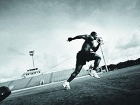

跑步的训练方法

有短跑，中跑，长跑，马拉松跑这些不谈
讲下面介绍几种训练法：顺风跑，顶风跑。上坡跑，下坡跑。学习和了解知识，再体会跑步的要领。指导自己训练。这四种训练法对竞技体育有积极促进作用，对青少年跑中长跑训练提高成绩是有效的。
顺风跑
- 这是训练提高绝对速度能力，快速放松跑技术合理，有效的训练手段。在跑步的过程中，一定要体会快速放松，动作正确，用脑子跑步，就在于顺风跑。体会跑步后蹬，伸直，折叠，顶髋，摆腿，顺势前摆落地，重心的位移随着顺风跑而迅速移动。呼吸要自然呼吸。中老年人顺风跑要掌握匀速放松，技术合理。在训练中要循序渐进，防止受伤，总之顺风跑对中老年人好处是提高有氧代谢能力，增强心肺功能，显著提高中老年人最大吸氧量。一般顺风跑30米。利用惯性再跑20米。
顶风跑
- 这是逐步提高训练负荷强度的有效手段。全力跑，顶风而上，呼吸不畅，有意训练在顶风跑中的呼吸方法。因为我们在跑马拉松。中长跑比赛中，天气不良是同等条件的。有顺风跑，就有顶风跑。所以必须训练顶风跑。在顶风跑中。要求步幅小，步频快。省力保存体力，做到动作自然轻松，不要变形。摆臂自然，不要晃动。训练顶风跑的距离100米为好。可以反复多练几次。呼吸可以根据自己的习惯，风太大时。舌头顶上额，防止冷空气吸入，引起腹部疼痛。
上坡跑
- 上坡跑训练，一般要求。最佳坡度15度-20度，距离最好200米-400米。跑步动作：高抬腿，后蹬充分，重心要高。动作规范。专门训练腿部力量，作为基础素质训练手段。每个运动员都有自己训练的高招。上坡跑强度大。造成疲劳需要采取有效的恢复手段，才能保证继续训练。
下坡跑
- 下坡跑在正确掌握跑的技术的情况下，利用坡度推动，获得最高速度，一定要放松跑，顺着坡度跑起来了。将快速跑和自然放松跑结合起来，才能获得高速放松的能力，但不能在疲劳状态下进行练习下坡跑。下坡跑要求心肺功能特好，否则速度达不到训练要求。例如马拉松跑比赛要求在平坦的道路上举行，对坡度有要求的，比赛时，上坡跑全力跑，下坡跑。坡度推着你跑。心肺不好的人容易发生问题。心脏猝死的与坡度有一定的关系。因此训练时，上坡跑。下坡走。上坡走。下坡跑。训练几个反复。上坡跑，下坡跑对青少年训练帮助特大。中老年人练习要十分注意，防止受伤。体重重的跑友不要进行上下坡训练。跑友们在训练中尝试一下吧！